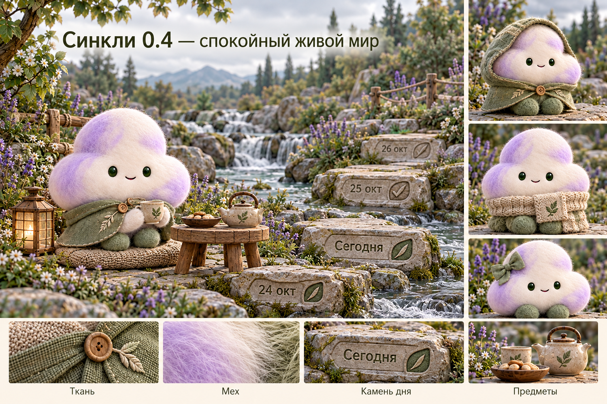
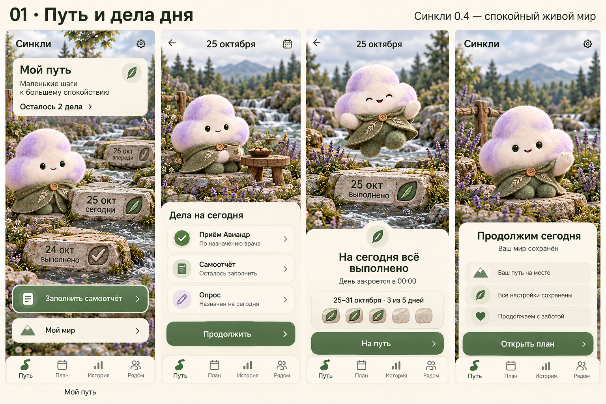
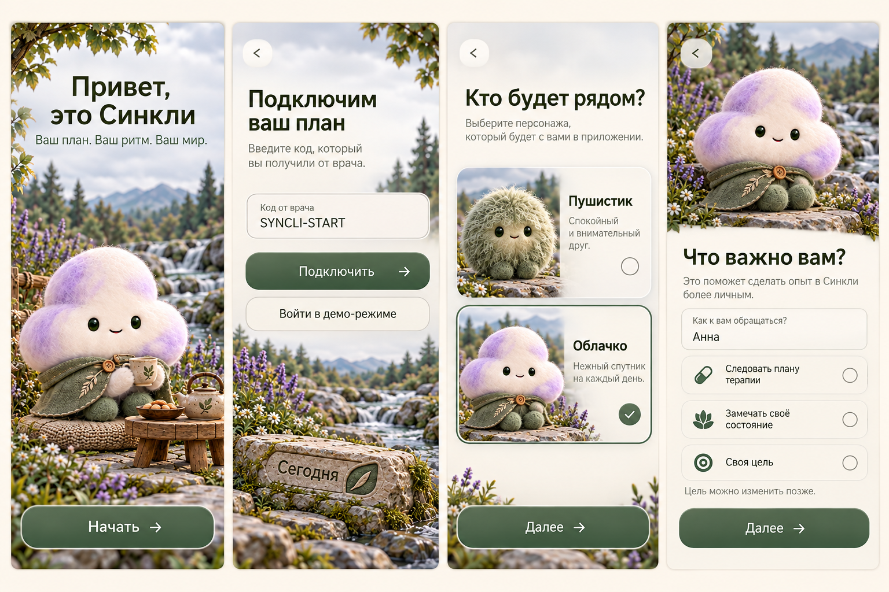
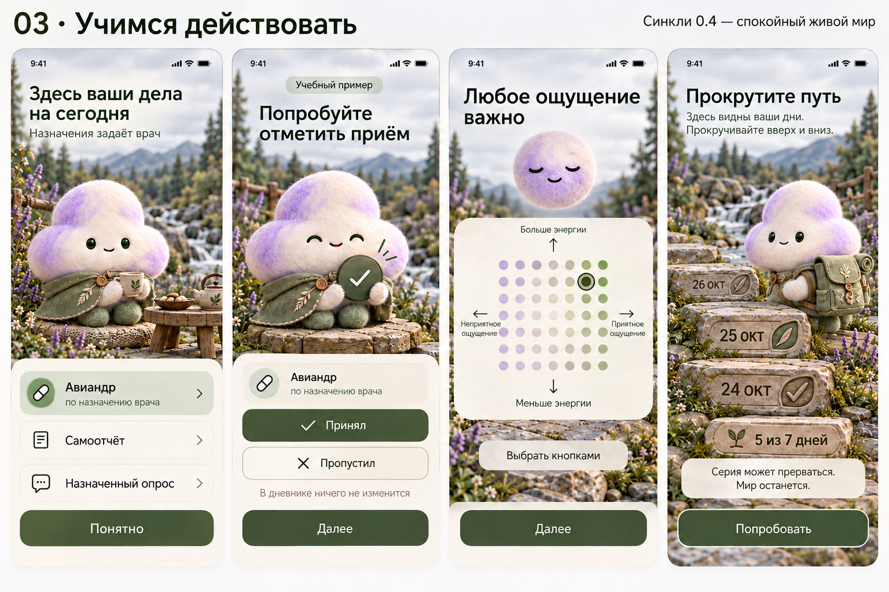
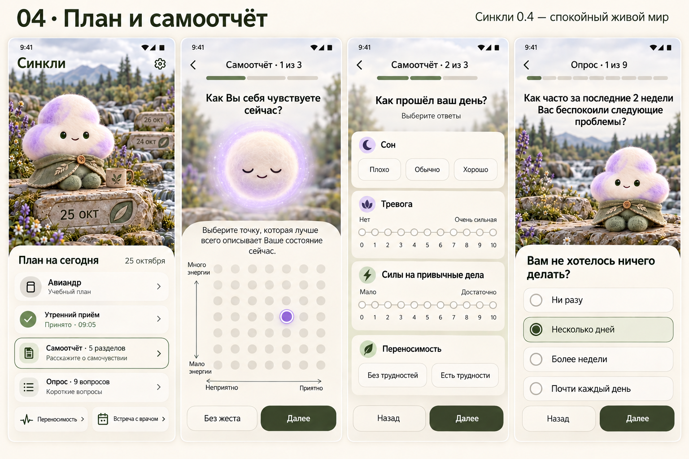
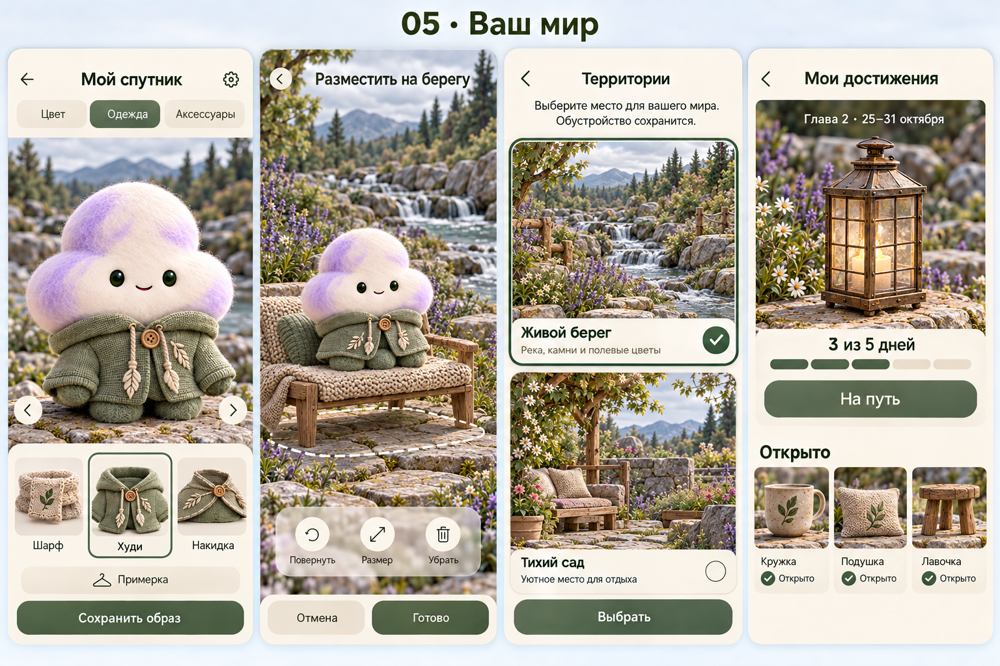
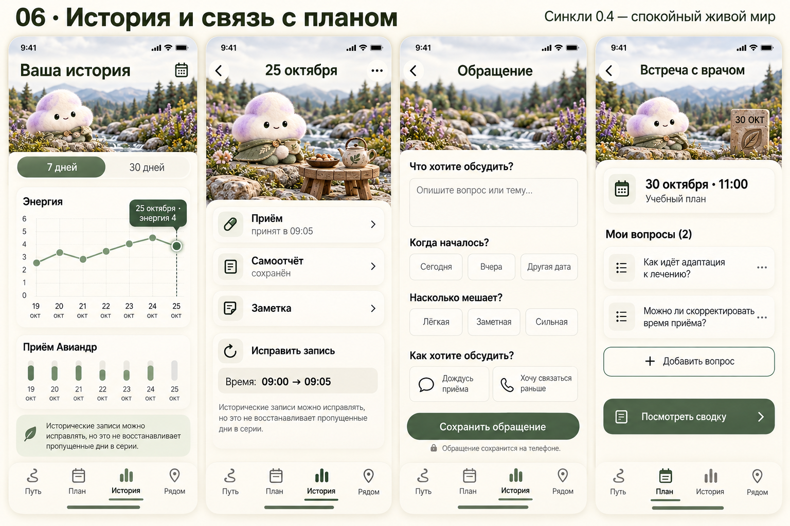
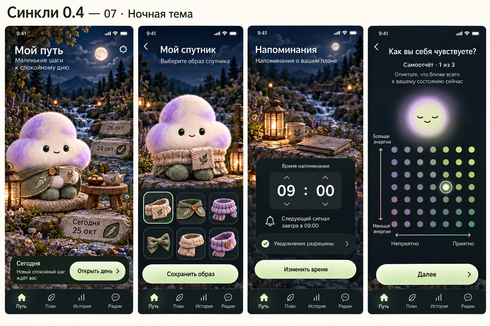
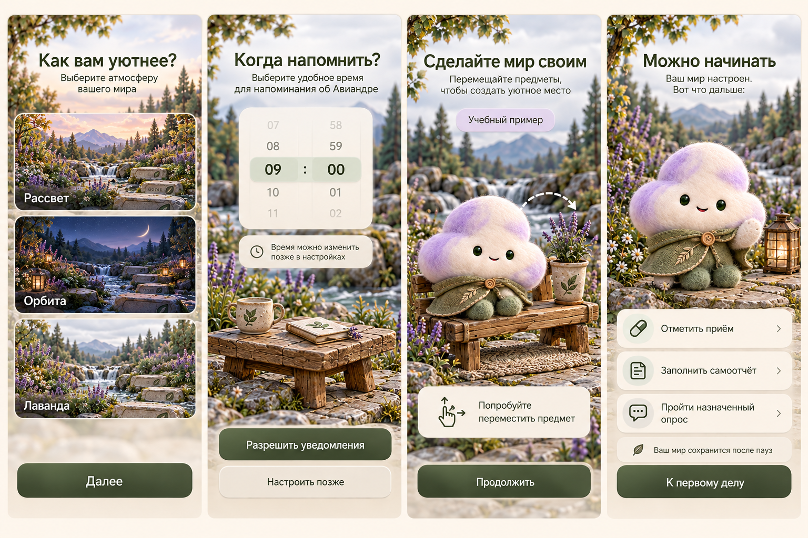
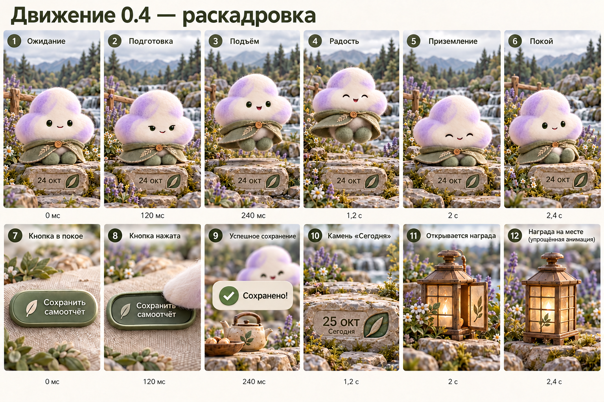

25 октября 2026 · Проект версии 0.4 · Для согласования
Спокойный живой мир и понятные ежедневные действия
10 листов: художественный эталон, 32 экранных состояния и 12 кадров
раскадровки. Рабочий демонстрационный спутник — облачко. Пушистик
остаётся вторым вариантом выбора.
Ваши уточнения учтены: естественный свет без пересветов; один
выбранный спутник; фактурные встроенные камни дней. Два вида одновременно
показаны только отдельными вариантами на экране выбора.
00 · Художественный эталон
Один выбранный спутник, спокойный свет, фактурная ткань и камни дней.

Нажмите на лист, чтобы открыть исходное изображение и увеличить
детали.
01 · Путь и дела дня
Сегодня, список обязательств, завершение дня и возвращение после паузы.

Нажмите на лист, чтобы открыть исходное изображение и увеличить
детали.
02 · Знакомство
Приветствие, код/демо, выбор спутника и личная цель.

Нажмите на лист, чтобы открыть исходное изображение и увеличить
детали.
03 · Учимся действовать
Учебный план, пробная отметка приёма, карта ощущений и вертикальный
путь.

Нажмите на лист, чтобы открыть исходное изображение и увеличить
детали.
04 · План и самоотчёт
Задания, обязательный дневной отчёт и отдельная полная форма опроса.

Нажмите на лист, чтобы открыть исходное изображение и увеличить
детали.
05 · Мир и гардероб
Объёмная одежда, расстановка, территории, награды.

Нажмите на лист, чтобы открыть исходное изображение и увеличить
детали.
06 · История и обращения
График, исправление, дата начала трудности, подготовка к визиту.

Нажмите на лист, чтобы открыть исходное изображение и увеличить
детали.
07 · Ночная тема
Та же функциональность в согласованном ночном освещении.

Нажмите на лист, чтобы открыть исходное изображение и увеличить
детали.
08 · Завершение обучения
Темы, время напоминания, учебное обустройство и первое настоящее
задание.

Нажмите на лист, чтобы открыть исходное изображение и увеличить
детали.
09 · Раскадровка движения
12 статичных кадров для обсуждения реакции спутника и результата
действия. Это не видео и не готовый риг.

Нажмите на лист, чтобы открыть исходное изображение и увеличить
детали.
На согласование
Художественный язык, спокойное освещение, камни дней, одежда, компоновка
экранов и маршрут обучения. Спецификация описывает 13 учебных состояний,
14 состояний спутников, motion-сценарии M01–M10, исправления аудита и 21
критерий приёмки.
Нативные анимации и APK 0.4 ещё не реализованы. Растровые макеты
показывают намерение; небольшие различия пиктограмм или типографики не
заменяют единую систему компонентов и точные тексты спецификации.
Правила терапии, дат и тестов определяет документ и каталог источников,
а не случайные детали изображения.